승강기기사 (2003-05-25 기출문제)
1과목: 승강기 개론
1. 소형과 저속엘리베이터에 사용되는 비상정지장치로 로프에 장력이 없어져 느슨해졌을 때 비상정지장치가 작동되는 안전장치는?
- 플랙시블 가이드 클램프형 비상정지장치
- 플랙시블 웨지 클램프형 비상정지장치
- 롤러식 비상정지장치
- 로프이완 비상정지장치
(정답률: 75%)

2. 승강기의 카와 균형추와의 로프 거는 방법 중 더블랩을 사용하는 승강기는?
- 저속화물용 승강기
- 중속 승용승강기
- 고속 기어레스 승용승강기
- 아파트용 승용승강기
(정답률: 65%)
3. 감속기를 사용하는 기어드 권상기의 일반적인 적용속도는 몇 m/min 이하인가?
- 90
- 1⑤
- 125
- 140
(정답률: 53%)
4. 엘리베이터의 가이드 레일을 설치할 때 레일 브라켓트(Rail Bracket)의 간격을 작게 하면 동일한 하중에 대하여 응력도 및 휨도는 어떻게 되겠는가?
- 응력도와 휨도가 모두 작아진다.
- 응력도와 휨도가 모두 커진다.
- 응력도는 커지고 휨도는 작아진다.
- 응력도는 작아지고 휨도는 커진다.
(정답률: 73%)
5. 유압엘리베이터에서 작동 기름의 압력 맥동을 흡수하여 진동, 소음을 감소시키기 위한 부품은?
- 안전밸브
- 스톱밸브
- 사이렌서
- 유량제어밸브
(정답률: 83%)
6. 유압식엘리베이터에서 오일이 한쪽 방향으로만 흐르도록 제어하는 밸브는?
- 스톱밸브
- 유량제어밸브
- 체크밸브
- 릴리프밸브
(정답률: 69%)
7. 조속기의 회전속도가 정격속도를 넘을 때 기계적으로 감지하는 것은?
- 로프캐치 및 훅
- 진자 및 전기스위치
- 진자 또는 볼
- 스프링 및 전기스위치
(정답률: 65%)
8. 제동기에 대한 설명으로 옳은 것은?(오류 신고가 접수된 문제입니다. 반드시 정답과 해설을 확인하시기 바랍니다.)
- 승객용 엘리베이터는 120%의 부하로 전속하강중 위험없이 감속정지할 수 있어야 한다.
- 화물용 엘리베이터는 125%의 부하로 전속하강중 위험없이 감속정지할 수 있어야 한다.
- 제동력은 전원이 흐르는 사이에 전자코일에 의해 주어진다.
- 제동력을 너무 크게하면 감속도가 과대화 된다.
(정답률: 47%)
9. 스텝체인의 전단력을 구할 때 고려하지 않아도 되는 것은?
- 스텝의 무게
- 체인의 자중
- 체인의 인장장치의 탄력에 의한 힘
- 체인의 인장장치의 자중
(정답률: 59%)
10. 층고 6000의 800형 에스컬레이터와 층고 4000의 1200형 에스컬레이터를 비교할 때 옳은 것은? (단. 에스컬레이터의 각도는 30도이다.)
- 에스컬레이터의 적재하중은 속도가 동일하기 때문에 1200형 에스컬레이터가 승객의 수송능력은 크다.
- 수송능력 비율은 2:3 이고 층고 비율이 3:2 이므로 에스컬레이터의 적재능력은 같다.
- 800형과 1200형의 적재하중의 차이는 약 200kg정도 1200형이 크다.
- 800형과 1200형의 적재하중은 각각 1680kg 및 2240kg이다.
(정답률: 42%)
11. 승객용 엘리베이터의 카바닥 앞부분과 승강로 벽과의 수평거리로 옳은 것은?
- 125mm이하이어야 한다.
- 130mm이하이어야 한다.
- 135mm이하이어야 한다.
- 140mm이하이어야 한다.
(정답률: 64%)
12. 주어진 조건과 같이 어떤 건물에 엘리베이터를 설치하려고 한다. 여기에 사용할 엘리베이터용의 변압기 용량을 산정한 것으로 옳은 것은?
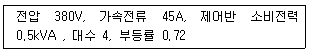
- 49.2kVA보다 커야 한다.
- 65.4kVA보다 커야 한다.
- 87.3kVA보다 커야 한다.
- 98.3kVA보다 커야 한다.
(정답률: 40%)
13. 교류 2단 속도제어에서 가장 많이 사용되고 있는 속도비는?
- 2:1
- 3:1
- 4:1
- 6:1
(정답률: 69%)
14. 전동기 주회로의 사용전압이 400V를 초과하는 경우, 절연저항은 몇 MΩ 이상이어야 하는가?
- 0.1
- 0.2
- 0.3
- 0.4
(정답률: 53%)
15. 엘리베이터를 3∼8대 병설할 때에 각 케이지를 낭비없이 합리적으로 운행관리하는 조작 방식은?
- 군승합 자동식
- 군관리 방식
- 자동식
- 범용방식
(정답률: 69%)
16. 로프식 엘리베이터에서 승강로의 구조는 카바닥 앞부분과 승강로벽과의 수평거리는 출입구가 2개인 엘리베이터인 경우 각각의 출입구에 대하여 몇 mm 이하로 하여야 하는가?
- 1⑤
- 115
- 125
- 135
(정답률: 62%)
17. 나선형 에스컬레이터라고도 하며 나선형으로 상승 혹은 하강하는 에스컬레이터는?
- 옥내용 에스컬레이터
- 모듈러 에스컬레이터
- 옥외용 에스컬레이터
- 스파이럴 에스컬레이터
(정답률: 60%)
18. 초고속 엘리베이터에서 카측의 비상정지장치가 작동할 때 로프의 관성을 줄이기 위한 안전장치는?
- 로크다운 스위치
- 파이널 리미트스위치
- 강제감속장치
- 완충장치의 리미트스위치
(정답률: 62%)
19. 소형 엘리베이터에 대한 사항이 아닌 것은?(관련 규정 개정전 문제로 여기서는 기존 정답인 2번을 누르면 정답 처리 됩니다. 자세한 내용은 해설을 참고하세요.)
- 단독주택에 주로 설치한다.
- 승객용으로 보통 6인승 이하이다.
- 적재하중이 200kg 이하인 것을 말한다.
- 승강행정이 10m 이하인 것이다.
(정답률: 53%)
20. 승객이 출입하는 동안에 승객과 도어의 충돌을 방지하기 위한 감지장치가 아닌 것은?(오류 신고가 접수된 문제입니다. 반드시 정답과 해설을 확인하시기 바랍니다.)
- 세이프티 슈
- 광전 장치
- 초음파 장치
- 도어 스위치
(정답률: 18%)
2과목: 승강기 설계
21. 인버터 엘리베이터에서 발생한 고차 고조파가 전파되는 경로가 아닌 것은?
- 복사에 의한 경로
- 진동에 의한 경로
- 정전유도에 의한 경로
- 전로전파에 의한 경로
(정답률: 60%)
22. 권상기의 설계기준으로 틀린 것은?
- 시브로서 주로프의 지름에 접한 부분의 길이가 그 둘레길이의 1/4 이하인 경우는 시브의 피치지름은 주로프 지름의 36배이상으로 할 수 있다.
- 제동기의 성능은 정격하중의 125%에서 동작하여 정지할 때 카가 안전하게 감속정지시킬 수 있어야 한다.
- 시브홈은 종진동 및 횡진동의 최대 진폭값이 0.02mm 이하이어야 한다.
- 브레이크 드럼 외경의 최대 진폭값은 0.03m이하이어야 한다.
(정답률: 50%)
23. 카자중이 1400kg, 적재하중이 1000kg이고 속도가 60m/min인 로프식 승강기의 오버밸런스율이 45％일 때 전동기 용량은 약 몇 kW 인가? (단, 권상기 효율은 80％, 로핑 효율 95％, 가이드슈 등의 주행 효율이 75％이다.)
- 7.5
- 8.5
- 9.5
- 10.5
(정답률: 32%)
24. 그림에서 중간 스톱퍼에 해당되는 것은?
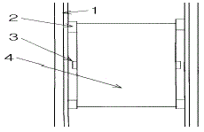
- 1
- 2
- 3
- 4
(정답률: 59%)
25. 승객용 로프식엘리베이터에서 카 틀의 브레이스 로드 1개에 작용하는 장력은 약 몇 kg 인가?(단, 카자중 970kg, 정격하중 530kg, 브레이스 로드의 경사각은 65도이다.)
- 179
- 321
- 417
- 586
(정답률: 46%)
26. 그래프와 같은 특성을 갖는 비상정지장치는 어떤 종류의 것인가?
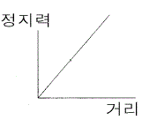
- 즉시 작동형 비상정지장치
- 슬랙로프 세이프티
- F.G.C형 비상정지장치
- F.W.C형 비상정지장치
(정답률: 72%)
27. 수평보행기에 대한 설명으로 틀린 것은?
- 파레트형의 경사도는 12도이하로 한다.
- 이동손잡이간의 거리는 1.5m이하로 한다.
- 경사도가 8도이하인 것의 이동손잡이 정격속도는 분당 40m이하로 한다.
- 경사도가 8도를 초과하는 것의 이동손잡이의 정격속도는 분당 30m이하로 한다.
(정답률: 39%)
28. 엘리베이터용 전동기가 갖추어야 할 조건으로 적당하지 않은 것은?
- 기동토크가 클 것
- 기동전류가 클 것
- 소음이 적을 것
- 회전부의 관성모멘트가 적을 것
(정답률: 66%)
29. 공급주파수 60Hz, 4극인 3상유도전동기의 전부하 회전수가 1583rpm일 때 3상 유도전동기의 슬립은 약 몇 % 인가?
- 10
- 12
- 14
- 16
(정답률: 59%)
30. 링크기구에서 링크기구를 결합하는 절의 수는 반드시 몇 절이어야 하는가?
- 3
- 4
- 5
- 6
(정답률: 45%)
31. 승강기의 설비계획상 고려하지 않아도 되는 사항은?
- 교통 수요에 적합한 대수
- 승강기의 배치 배열
- 이용자의 대기시간
- 건물 유리창의 수
(정답률: 66%)
32. 최종층 감속정지장치에서 정지스위치의 위치는?
- 자동착상정지장치가 작동하기 직전에 작동하는 위치
- 자동착상정지장치가 작동한 직후에 작동하는 위치
- 자동착상정지장치와 동시에 작동하는 위치
- 카의 속도가 저속으로 절환된 직후에 작동하는 위치
(정답률: 52%)
33. 700kg/cm2의 인장응력이 발생하고 있을 때 변형률을 측정하였더니 0.0003 이었다. 이 재료의 종탄성계수는 몇 kg/cm2 인가?
- 2.1×104
- 2.3×104
- 2.1×106
- 2.3×106
(정답률: 48%)
34. 속도 120m/min인 비상용 엘리베이터의 카 바닥에서 상부 체대까지의 거리가 3m인 경우 오버헤드는 몇 m 인가?
- 4.2
- 4.6
- 4.8
- 5
(정답률: 45%)
35. 오일이 실린더로 들어가는 곳에 설치되어 만일 파이프가 파손 되었을 때 자동적으로 밸브를 닫아 카가 급격히 떨어 지는 것을 방지하는 밸브로 한번 동작하면 인위적으로 재조작하기 전에는 닫힌 상태로 유지되는 밸브는?
- 럽처밸브
- 안전밸브
- 체크밸브
- 스톱밸브
(정답률: 46%)
36. 군관리시스템에 관한 설명으로 적절하지 못한 것은?
- 사용상의 용이성이나 쾌적함의 향상은 군관리의 목적이 아니다.
- 예보의 정밀도는 예보 틀림과 예보 변경의 발생률을 이용하여 평가한다.
- 대기시간은 군관리시스템의 성능을 평가할 때 가장 일반적으로 사용되는 지표이다.
- 승차시간도 군관리시스템의 성능평가의 지표로 하는 경우도 있다.
(정답률: 53%)
37. 포크 리프트 등을 사용하는 화물용 엘리베이터의 권상기에 대한 권상능력을 설정하는 방법으로 옳은 것은?
- 적재하중의 110%하중이 작용해도 안전하게 작동하여야 한다.
- 적재하중의 125%하중이 작용해도 안전하게 작동하여야 한다.
- 적재하중의 150%하중이 작용해도 안전하게 작동하여야 한다.
- 적재하중의 175%하중이 작용해도 안전하게 작동하여야 한다.
(정답률: 31%)
38. AC 전자브레이크와 DC 전자브레이크를 비교할 때 틀린 것은?
- AC 브레이크는 작동을 원활히 하기 위하여 대시포트를 사용한다.
- DC 브레이크는 코일에 직렬로 다이오드를 접속해서원활한 작동을 한다.
- AC 브레이크의 자석은 적층 코아이다.
- DC 브레이크는 고형 코아이므로 구조는 간단하다.
(정답률: 50%)
39. 엘리베이터의 각종 상태에 대한 비상운전에의 전환 가능성을 설명한 것이다. 틀린 것은?
- 카내 비상스위치가 조작되어 있더라도 비상호출운행은 가능하다.
- 카 내부 운전 휴지스위치가 동작되어 있더라도 비상호출운행은 가능하다.
- 파킹 스위치가 동작되어 있더라도 비상호출운행은 가능하다.
- 지진관제에 의해 정지 중인 경우, 비상호출운행은 불가능하다.
(정답률: 46%)
40. 종점스위치(terminal limit switch)에 관한 설명 중 옳은 것은?
- 카 내부 승차인원이나 적재화물의 하중을 감지한다.
- 엘리베이터가 최상층 또는 최하층을 지나치지 않도록 한다.
- 각 층마다 정차하기 위한 스위치로 카에 설치한다.
- 각 층마다 정차하기 위한 스위치로 층마다 설치한다.
(정답률: 64%)
3과목: 일반기계공학
41. 다음 중 가열할수 없는 용접부에 상온하에서 강하게 압축하므로서 경계면을 국부적으로 소성변형시켜서 용접하는 것으로 알루미늄이나 동 전선 소재의 맞대기 용접에 이용되고 있는 것은?
- 냉간압접
- 고주파압접
- 가스용접
- 초음파용접
(정답률: 60%)
42. 다음 중 암나사를 가공하는데 사용하는 공구는?
- 다이스
- 탭
- 리머
- 호브
(정답률: 65%)
43. 다음 공작기계 중 절삭공구가 회전하지 않는 것은?
- 밀링 머신
- 드릴링 머신
- 호빙 머신
- 셰이퍼
(정답률: 66%)
44. 기계재료의 담금질성(Hardenability) 설명으로 가장 적합한 것은?
- 필요온도까지 급냉하는 성질
- 재료가 변태점에서 급냉하는 성질
- 재료가 담금질에 의해 연화되는 성질
- 재료가 담금질에 의해 경화되는 성질
(정답률: 55%)
45. 60ℓ 의 산소용기에 150기압이 되게 산소를 충전하였다면 이를 1기압에서 환산하면 약 몇 ℓ 의 산소가 되겠는가?
- 900
- 1500
- 8000
- 9000
(정답률: 66%)
46. 다음 기계재료 중 경금속에 속하는 것은?
- 합금 주철
- 황동
- 규소 강판
- 알루미늄
(정답률: 73%)
47. 다음 중 동력 전달용으로 가장 적합한 나사는?
- 삼각 나사
- 관용(pipe) 나사
- 둥근 나사
- 사다리꼴 나사
(정답률: 57%)
48. 주동 링크에서 종동 링크로 운동과 힘을 전달하는 것으로 적당하지 않은 것은?
- 매개 링크에 의한 전동
- 공간을 사이에 둔 전동
- 직접 접촉에 의한 전동
- 고정 링크 운동에 의한 전동
(정답률: 39%)
49. 유압작동유의 구비조건으로 올바른 것은?(오류 신고가 접수된 문제입니다. 반드시 정답과 해설을 확인하시기 바랍니다.)
- 압축성이어야 한다.
- 열을 방출하지 아니하여야 한다.
- 장시간 사용하여도 화학적으로 안정하여야 한다.
- 외부로부터 침입한 불순물을 침전 분리시키지 않아야 한다.
(정답률: 62%)
50. 길이 50㎝인 연강재의 환봉에 인장력이 작용하여 길이가 60㎝로 늘어났을 때 이 재료의 연신율은 얼마인가?
- 10 %
- 20 %
- 23 %
- 40 %
(정답률: 68%)
51. 길이 2m, 지름 10㎜인 원형봉이 2000㎏f의 축방향 인장하중을 받고 2㎜ 늘어났다면 재료의 종탄성계수의 값은 약 몇 ㎏f/㎝2 인가?
- 8.10 x 104
- 2.55 x 106
- 1.61 x 105
- 3.15 x 106
(정답률: 50%)
52. 다음 중 굽힘과 비틀림을 동시에 받는 축으로 동력 전달용으로 사용되는 축의 명칭으로 가장 적합한 것은?
- 중공축
- 크랭크축
- 전동축
- 플랙시블축
(정답률: 65%)
53. 호칭 번호 100 번의 로울러 체인용 스프로킷 휘일에서 잇수 40 일 때 피치원 지름 (mm)은? (단, 호칭번호 100 번 체인의 피치는 31.75 ㎜ 이다.)
- 404.67
- 304.67
- 454.54
- 354.54
(정답률: 50%)
54. 유압기기에서 치차펌프를 사용시 장점과 단점의 설명으로 틀린 것은?
- 구조가 간단하다.
- 토출량을 가변적으로 사용하기 편리하다.
- 내부 누설이 다른 펌프에 비교하여 크다.
- 다른 유압펌프에 비해서 먼지에 강하다.
(정답률: 47%)
55. 두께 3㎜인 연강판에 지름 30㎜의 구멍을 펀칭할 때 펀칭력은 최소 약 몇 ㎏f 이상이어야 하나? (단, 연강판의 전단 파괴강도는 25 ㎏f/㎜2 이다.)
- 4526
- 5360
- 6580
- 7070
(정답률: 33%)
56. 절삭 가공시 구성인선(built up edge)을 방지하기 위한 대책으로 옳지 못한 것은?
- 절삭 깊이(cut of depth)를 작게 할 것
- 절삭 속도(cutting speed)를 크게 할 것
- 경사각(rake angle)을 작게 할 것
- 공구의 인선(cutting edge)을 예리하게 할 것
(정답률: 62%)
57. 두랄루민(duralumin)을 설명한 것 중 틀린 것은?
- 담금질 시효경화 처리에 의하여 기계적 성질을 개선하여 강도가 크고 성형성이 좋다.
- 알루미늄 합금 중에서도 열처리에 의해 재질 개선이 가능한 합금이다.
- Al - Si - Ni - Mg 합금으로 고온강도가 커서 피스톤재료로 주로 쓰인다.
- Al - Cu - Mg - Mn 합금으로 항공기, 자동차 등의 재료로 널리 사용된다.
(정답률: 68%)
58. 그림과 같은 기어장치에서 각 기어의 잇수를 Z1 = 20, Z2= 85, Z3 = 25, Z4 = 100 이면 회전 속도비(回轉速度比) N1 : N4는?
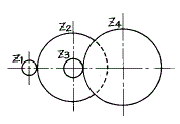
- 17 : 1
- 15 : 1
- 13 : 1
- 10 : 1
(정답률: 60%)
59. 다음 중 자동 하중 브레이크 라고도 하는 것은?
- 원판 브레이크
- 원추 브레이크
- 웜 브레이크
- 포올 브레이크
(정답률: 60%)
60. 다음 중 압력제어 밸브에 속하지 않는 것은?
- 시퀀스 밸브
- 체크 밸브
- 언로더 밸브
- 카운터 밸런스 밸브
(정답률: 63%)
4과목: 전기제어공학
61. 그림과 같은 신호선도와 등가인 것은?
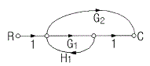
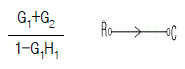
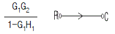
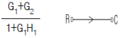
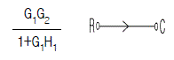
(정답률: 39%)
62. 교류를 직류로 변환하는 전기기기가 아닌 것은?
- 단극발전기
- 수은정류기
- 회전변류기
- 전동발전기
(정답률: 43%)
63. 논리식
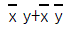
를 간단히 하면?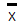
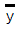
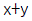
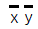
(정답률: 74%)
64. 극수가 4 이고 슬립이 6%인 유도전동기를 어느 공장에서 운전하고자 할 때 예상되는 회전수는 약 몇 rpm 인가?(오류 신고가 접수된 문제입니다. 반드시 정답과 해설을 확인하시기 바랍니다.)
- 1300
- 1400
- 1700
- 1800
(정답률: 42%)
65.
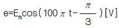
와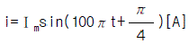
와의 위상차를 시간으로 나타내면 몇 초에 해당되는가?- 5.33×10-4
- 6.33×10-4
- 7.33×10-4
- 8.33×10-4
(정답률: 25%)
66. 뒤진 역률 80%, 1000kW의 3상부하가 있다. 이것에 콘덴서를 설치하여 역률을 95%로 개선하려고 한다. 필요한 콘덴서의 용량은 몇 kVA 인가?
- 422
- 633
- 844
- 1266
(정답률: 40%)
67. 피드백 제어계의 제어장치에 속하지 않은 것은?
- 설정부
- 조절부
- 검출부
- 제어대상
(정답률: 46%)
68. 직류 전동기의 규약효율을 나타내는 식은?
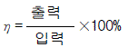
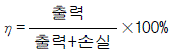
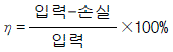
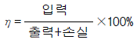
(정답률: 73%)
69. 적분시간이 3분이고, 비례감도가 5인 PＩ조절계의 전달함수는?
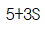
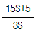
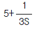
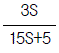
(정답률: 45%)
70. 서보전동기의 특징으로 잘못 표현된 것은?
- 기동, 정지, 역전 동작을 자주 반복할 수 있다.
- 발열이 작아 냉각방식이 필요 없다.
- 속응성이 충분히 높다.
- 신뢰도가 높다.
(정답률: 73%)
71. PLC(Programmable Logic Controller)의 CPU부의 구성과 거리가 먼 것은?
- 데이터 메모리부
- 프로그램 메모리부
- 연산부
- 전원부
(정답률: 67%)
72. 제어장치가 제어대상에 가하는 제어신호로 제어장치의 출력인 동시에 제어대상의 입력인 신호는?
- 동작신호
- 조작량
- 제어량
- 목표값
(정답률: 63%)
73. 저항체에 전류가 흐르면 줄열이 생기는데 이때 안전전류는 전력의 몇 제곱에 비례하는가?
- 1
- 2
- 1/2
- 3/2
(정답률: 41%)
74. 하나의 폐회로를 형성하고 자동제어의 기본회로를 형성하는 제어는?
- 시퀀스제어
- 피드백제어
- 온ㆍ오프제어
- 프로그램제어
(정답률: 62%)
75. 철심을 가진 변압기 모양의 코일에 교류와 직류를 중첩하여 흘리면 교류임피던스는 중첩된 직류의 크기에 따라 변하는데 이 현상을 이용하여 전력을 증폭하는 장치는?
- 회전증폭기
- 자기증폭기
- 다이리스터
- 차동변압기
(정답률: 62%)
76. 다음 전선 중 도전율이 가장 우수한 재질은 어느 것인가?
- 경동선
- 연동선
- 경알미늄선
- 아연도금철선
(정답률: 61%)
77. 전력에 대한 설명으로 옳지 않은 것은?
- 단위는 Ｊ/s 이다.
- 단위시간의 전기 에너지이다.
- 공률과 같은 단위를 갖는다.
- 열량으로 환산할 수 있다.
(정답률: 43%)
78. 제어동작 중 PＩD(비례적분미분)동작을 이용했을 때의 특징에 해당되지 않은 것은?
- 응답의 오버슈트를 감소시킨다.
- 잔류편차를 최소화 시킨다.
- 정정시간을 적게 한다.
- 응답의 안정성이 작다.
(정답률: 63%)
79. 회로에서 i2 가 0 이 되기 위한 C 의 값은? (단, L은 합성인덕턴스이고, M은 상호인덕턴스이다.)
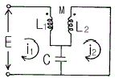
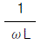
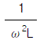
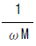
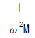
(정답률: 53%)
80. 조종사가 배치되어 있지 않는 엘리베이터의 자동제어는?
- 추종제어
- 프로그램제어
- 정치제어
- 프로세스제어
(정답률: 61%)